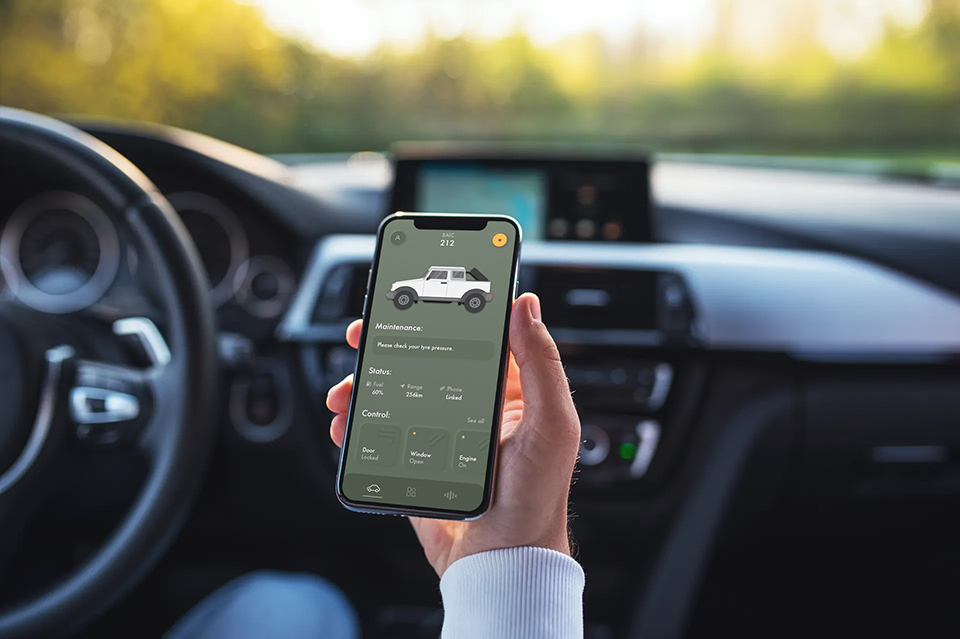

ARK Mobile
Product design, Wireframe, Prototype, GUI
ARK Mobile is a smartphone app. It aims to help the user throughout her journey.

#1. What problems are we solving?
It is a fact that nowadays, an increasing amount of cars are equipped with smart agents. However, those agents are often restrainted to the car, and are restrainted to the limited performance of the HMI system. And more importantly, most cars (~80%) do not provide a smart agent.
Therefore, we came up with the idea to embed the agent to the smartphone. In this way, your smartphone can not only provide you with a 24/7 smart experience, but can also be carried into any of the cars.
#2. How would users use our app?
We did user profile study, to figure out the typical user behavior with a car voice agent.
We aimed at the users who have already had a car voice agent. And designed questionnaires and did interview with them.
Some typical profiles are: the experiencing guy, the safty guy, the fashion guy and the efficient guy.
The user profile was taken into consideration throughout the design. Including functions and avatar personality.
Meanwhile, we created user journey map for an ordinary use of our app.
The idea was to check users' behaviors, emotions and pains during their travel from place A to place B.
With the user profile and journey map, we brainstormed the functions for the product.
Some highlighted functions are:
-
Calendar Assistant
Virtual Assistant will remind you if there is an event.
Show navigation or make a phone call according to the schedule.
-
Driving Suggestion
You're driving in the city with high beam.
You're driving too slow and it might cause traffic jam.
-
Car Manual
Your tyre pressure is low, would you like to go to the nearest gas station?
It's time to make your maintenance, shall I call the 4S agency?
#3. Wireframe and Prototype
We created wireframe and prototype with Sketch and Adobe XD.

Continuous Experience
You are listening to music at home and you'll continue hearing that music in the car.
You are navigating to a shop in your car and you'll continue navigating from the parking lot.